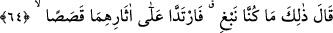

4- Mürşid şeyhin sohbeti, müridin rûhunu yetiştirmeye götüren güzel söz ve fiilleri
içerdiği için müridin gıdası mesâbesindedir. Mürid ne zaman bu sohbeti terk ederse,
vusûle eremeden ve maksûduna nâil olamadan nefsini boşuna yormuş olur. Onu buna
sevkeden ve yardımsız bırakan da sadece şeytandır. Dolayısıyla Mûsâ ve Yûşa
(aleyhime’s-selâm)’ın geri döndükleri gibi onun da tevfik refîki ile berâberliğe tekrar
dönmesi gerekir. Allah Teâlâ şöyle buyurur: “Ey îman edenler, Allah’tan korkun ve
doğrularla beraber olun.” (et-Tevbe, 9/119). Yâni onlarla beraberlikte ve sohbette
devam edin, yalancılarla beraber olmayın.
Mesnevî’de der ki:
Her yanda bir gulyabani, seni çağırır,
“Kardeş, gel, yol istiyorsan işte buracıkta.
Yoldaş, sana yol göstereyim, yoldaşın olayım.
Bu ince yolda ben sana kılavuzum” der.
Fakat ne kılavuzdur o, ne de yol bilir.
Yusuf, o kurt huylunun yanına az var!
Allah’tan bizi günahlardan korumasını ve tevfîkini niyaz ederiz.
64. Mûsâ: İşte aradığımız o idi, dedi. Hemen izlerinin üzerine geri döndüler.
“Mûsâ: İşte” balık hakkında zikrettiğin “aradığımız o idi, dedi.” Yâni işte bu,
aradığımız Hızır (a.s.)’la karşılaşmaya alâmet olan şeydi. “Hemen izlerinin üzerine
geri döndüler.” Döndükleri yer, nehrin denize döküldüğü taraftır. Yâni kendi izlerini
takib ederek, etrafı araştırarak yürüdüler. Sonunda balığın canlandığı ve denize düşerek
kendisine bir yol edindiği taşın yanına vardılar.
[198]. Buhârî, Itk, 17; Müslim, Elfaz, 13, 15; Ebû Dâvud, Edeb, 75; Müsned, II, 316,
423
[199]. Buhârî, Bedü’l-Halk, 11; Enbiya, 27; Tefsir, (18), 4; Müsned, V, 118